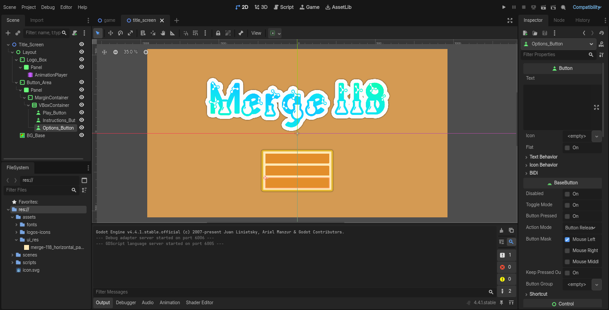

This peice of software is under development, but should be ready in the near future.
In the mean time, you can check out some other projects I have made :)
Merge 118
I am using the Godot Game Engine to create a fun and satisfying game called Merge 118. I am making this for fun and also to practice using the Godot Engine. The game is based on Suika Game, but instead of mergin fruits, you merge the elements from the periodic table! My goal is to make this game as engaging and enjoyable as possible, with smooth mechanics and an intuitive user interface.